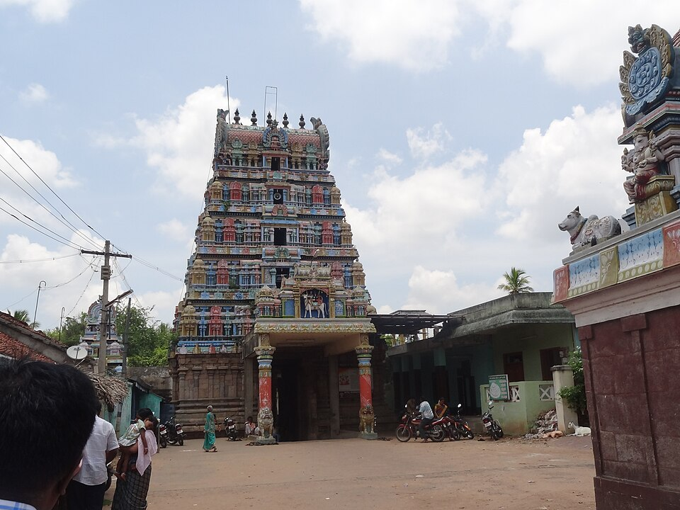
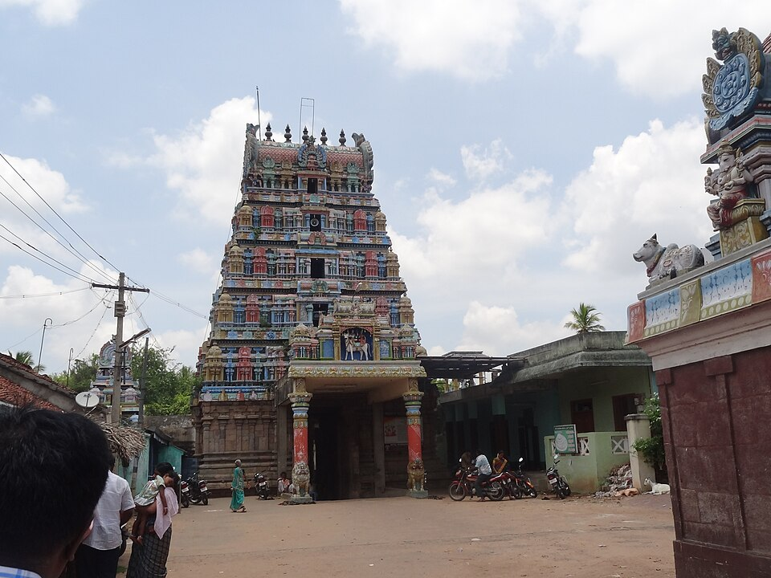

🌞 Navagraha Yatra – Kumbakonam
 



Suriyanar Temple
Legend: A king blinded by ego regained sight through Surya worship.
ॐ ह्रां ह्रीं ह्रौं सः सूर्याय नमः
Pariharam: Water arghyam at sunrise, wheat offeringBlessing: Vitality, clarity, leadership Next →
Thingaloor – Chandra
Legend: Chandra’s pride was dissolved here, restoring balance.
ॐ श्रीं सोमाय नमः
Pariharam: Milk abhishekam, white clothBlessing: Peace, family harmony Next →
Vaitheeswaran Koil – Mars
Legend: Shiva as healer; Mars anger transforms into healing force.
ॐ क्रां क्रीं क्रौं सः भौमाय नमः
Pariharam: Pepper vibhuti, red lentilsBlessing: Health, enemies removed Next →
Thiruvenkadu – Budhan
Legend: Shiva sanctified Budhan’s intellect.
ॐ ब्रां ब्रीं ब्रौं सः बुधाय नमः
Pariharam: Green gram, study donationBlessing: Intelligence, success Next →
Alangudi – Guru
Legend: Guru swallowed poison to save world.
ॐ ग्रां ग्रीं ग्रौं सः गुरवे नमः
Pariharam: Channa dal, yellow clothBlessing: Children, grace, marriage Next →
Kanjanoor – Shukra
Legend: Shukra regained sight through Shiva.
ॐ द्रां द्रीं द्रौं सः शुक्राय नमः
Pariharam: Ghee lamp, jasmineBlessing: Material comfort with dharma Next →
Thirunallar – Shani
Legend: Shani could not overpower Hanuman & Ganesha.
ॐ प्रां प्रीं प्रौं सः शनैश्चराय नमः
Pariharam: Sesame oil lamp, charityBlessing: Karma cleansing, stability Next →
Thirunageswaram – Rahu
Legend: Milk turns blue during abhishekam.
ॐ भ्रां भ्रीं भ्रौं सः राहवे नमः
Pariharam: Milk abhishekam, naga worshipBlessing: Breakthroughs, sudden grace Next →
Keezhaperumpallam – Ketu
Legend: Ketu grants moksha and insight.
ॐ स्त्रां स्त्रीं स्त्रौं सः केतवे नमः
Pariharam: Multi-grain charity, deepamBlessing: Spiritual growth, ending cycles